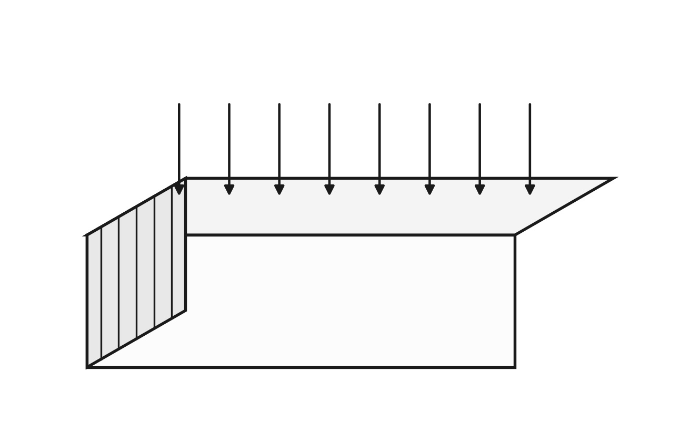
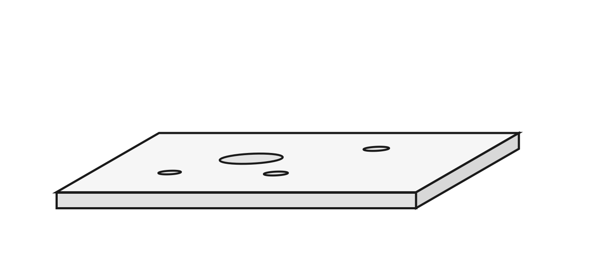
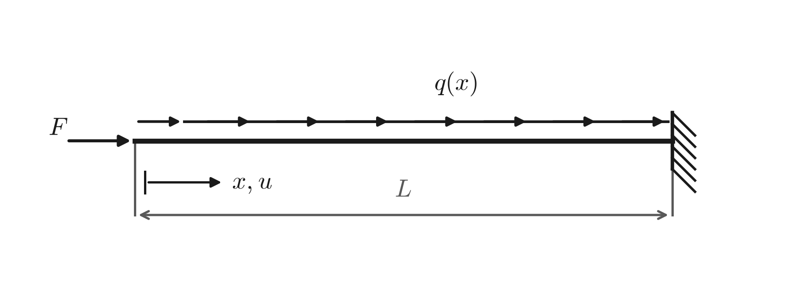
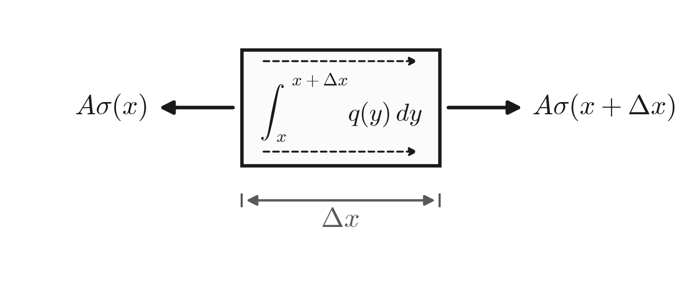
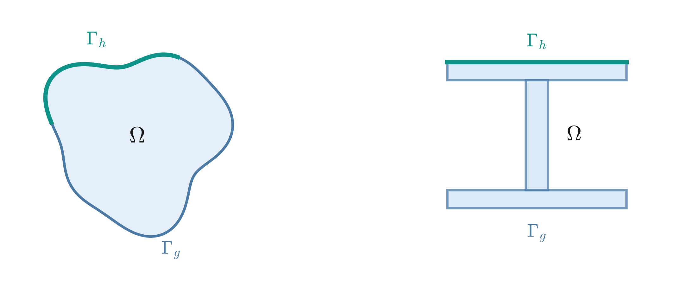

2 Class 2: Linear FEM
Consider a beam loaded from various forces

We have forces due to
- surface contact
- → forces due to self-weight / inertia
- → locations that the beam is fixed from moving in a direction
We want to determine a way to find
- displacements
- stresses \(\Big\}\) assess the quality of the design
- strains
Alternatively, consider a circuit board with various heat sources & cooling systems

- We have heat generated from some of the systems
- heat removed by surface coolants
- fixed temperatures at some locations
We want to determine a way to find
- temperatures
- heat flux \(\Big\}\) assess the viability of the design
- convective behavior
How do we synthesize both of these concepts, as well as e.g. flow of fluid, transport of a contaminant, current through a medium, etc.
Generalize & express as a boundary value (time independent) or initial value (time dependent) problem.
Consider the deformation of a one-dimensional beam.
3 1D Axial Deformation Derivation

Assume a structural member loaded axially, both by a force at its end, \(F\), and a distributed axial loading, \(q\).
Assume the bar is of length \(L\), \(x\) is the position along the bar from the LHS, & \(u\) is displacement (as a function of \(x\)) in the rightward direction. Assume a constant cross-section, \(A\).
Let \(Q_c = \left(\int q\,dx + C\right)\) be the pre-derivative of \(q\).
Choose an “element” of the bar

Sum the forces for this element:
\[ \begin{aligned} \sum F_x = 0 \;\Rightarrow\;& -A\sigma(x) + A\sigma(x+\Delta x) + \int_x^{x+\Delta x} q(y)\,dy = 0 \\[4pt] \Rightarrow\;& A\big[\sigma(x+\Delta x) - \sigma(x)\big] + Q_c(x+\Delta x) - Q_c(x) = 0 \\[4pt] \Rightarrow\;& \frac{1}{\Delta x}\Big[A\big[\sigma(x+\Delta x)-\sigma(x)\big] + Q_c(x+\Delta x) - Q_c(x)\Big] = 0 \qquad \text{b.c. } \Delta x \neq 0 \\[4pt] \Rightarrow\;& A\left[\frac{\sigma(x+\Delta x)-\sigma(x)}{\Delta x}\right] + \frac{Q_c(x+\Delta x)-Q_c(x)}{\Delta x} = 0 \end{aligned} \]
\(\displaystyle \lim_{\Delta x \to 0}\)
\[ \begin{aligned} \Rightarrow\;& A\frac{d\sigma}{dx} + \frac{dQ_c}{dx} = 0 \\[4pt] \Rightarrow\;& A\frac{d\sigma}{dx} + q(x) = 0 && \text{(Fundamental Theorem of Calculus)} \\[4pt] \Rightarrow\;& AE\frac{d\varepsilon}{dx} + q(x) = 0 && \text{(Hooke's Law: } \sigma = E\varepsilon) \\[4pt] \Rightarrow\;& \boxed{AE\frac{d^2u}{dx^2} + q(x) = 0} && \left(\varepsilon = \frac{du}{dx} = \lim_{\Delta x \to 0}\frac{\Delta \ell}{\Delta x}\right) \end{aligned} \]
Now,
\[ \begin{aligned} u(L) &= 0 && \text{(Fixed end)} \\[6pt] F &= \left.\frac{A\sigma}{A}\right|_{x=0} = \left.\frac{AE\varepsilon}{A}\right|_{x=0} = \left.AE\frac{du}{dx}\right|_{x=0} && \text{(Force on the end)} \\[4pt] &\Rightarrow\; \left.\frac{du}{dx}\right|_{x=0} = \frac{F}{EA} \end{aligned} \]
3.1 In Summary
\[ \frac{d^2u}{dx^2} + \frac{q(x)}{EA} = 0 \qquad u(L) = 0 \qquad \left.\frac{du}{dx}\right|_{x=0} = \frac{F}{EA} \]
Define
\[ f(x) = \frac{q(x)}{EA} \qquad\qquad h = \frac{-F}{EA} \]
Then our problem matches the Hughes FEM book:
\[ \frac{d^2u}{dx^2} + f(x) = 0 \qquad u(L) = 0 \qquad -\frac{du}{dx} = h \qquad\Longleftrightarrow\qquad \left(\; \begin{aligned} u_{,xx} + f &= 0 \\ u(L) &= 0 \\ -u_{,x} &= h \end{aligned} \;\right) \]
4 The Poisson equation
Many problems, including heat transfer, flow of water in an aquifer, electromagnetic potential, & 1D rod deformation can be written using Laplace’s / Poisson’s Equation.
\[ (\mathrm{S})\quad \begin{cases} \dfrac{\partial^2 u}{\partial x^2} + f = 0 & \leftarrow \text{Poisson equation} \\[10pt] u(L) = g & \leftarrow \text{known, or \textbf{Dirichlet} boundary condition} \\[10pt] -\dfrac{du}{dx} = h & \leftarrow \text{flux-based, or \textbf{Neumann} boundary condition} \end{cases} \]
Here, in reality, \(u\) is our unknown quantity; \(f\), \(g\) & \(h\) are inputs.
In language of math, \(u\) is a function — write
\(u : [0, L] \longrightarrow \mathbb{R}\)
- the domain is the kinds of input locations
- the range is the expected kinds of output (\(\mathbb{R}\) is real #s)
\((\mathrm{S})\) is a boundary value problem, with the two boundary conditions only examples of types of boundary conditions.
4.1 In higher dimensions
In higher dimensions, the Poisson Equation is as follows, with the Laplace equation being the case when \(f = 0\).
Given \(f : \Omega \to \mathbb{R}\), \(h : \Gamma_h \to \mathbb{R}\), \(g : \Gamma_g \to \mathbb{R}\), find \(u \in H^1(\Omega)\) such that
\[ \begin{aligned} -\Delta u &= f && \text{in } \Omega && \leftarrow \text{Poisson equation} \\ u &= g && \text{on } \Gamma_g && \leftarrow \text{known values} \\ \nabla u \cdot \underline{n} &= h && \text{on } \Gamma_h && \leftarrow \text{known flux} \end{aligned} \]
Or, more generally, for anisotropic behavior, assuming \(\underline{\underline{K}}\) is also known, find \(u\) such that
\[ \begin{aligned} -\nabla \cdot \left(\underline{\underline{K}}\nabla u\right) &= f && \text{in } \Omega \\ u &= g && \text{on } \Gamma_g \\ \nabla\left(\underline{\underline{K}}u\right)\cdot \underline{n} &= h && \text{on } \Gamma_h \end{aligned} \]

- \(\Omega\) is the geometry of interest (called the “domain”)
- \(\partial\Omega \equiv \Gamma\) is the boundary of the domain
- \(\Gamma_g\) is the part of the boundary where we know \(u = g\)
- \(\Gamma_h\) is the part of the boundary where we know the flux
The entire boundary is such that
\[ \Gamma = \Gamma_g \cup \Gamma_h \qquad\qquad \Gamma_g \cap \Gamma_h = \emptyset \]
- \(\cup\) union
- \(\cap\) intersect
- \(\emptyset\) empty set (nothing)